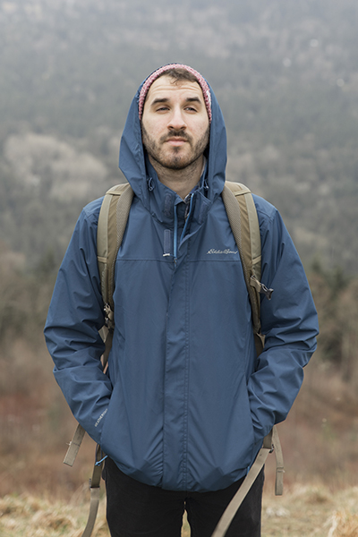

Call me Joey.
Thanks for visiting my page! I'm a creative "Swiss-army knife" freshly graduated from the advertising program at Grand Valley State University. I am also, to name a few things:
- A connoisseur of good tea.
- A collector of colorful socks.
- A fanatic of all things Nintendo.
Whether it's design, photo, or video, I have developed a vast array of creative knowledge and experience. If you want to know more, shoot me an email or call. If you want to play Mario Kart, bring it on.
Want to know more?
Still reading? You want to know even more about me? Alright, well my favorite TV show is RuPaul's Drag Race. In fact, one of my go-to philosophies come's from the show:
"If you can't love yourself, how in the hell are you 'gonna love somebody else? Can I get an amen?" -RuPaul
Want to know even more? Okay, follow me on social media for the latest information about me!